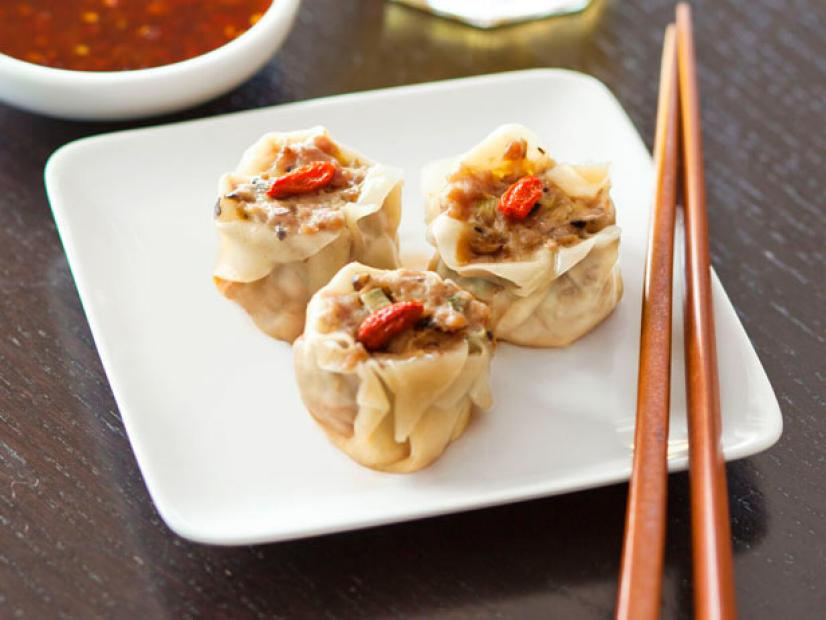

Steamed Pork and Mushroom Shumai

Shumai (燒賣) are steamed pork dumplings that are perennial favorites at dim sum. In this step-by-step shumai recipe, I show you how to prepare and wrap shumai.
The ingredients you'll need are as follows:
For the filling:
- 1 1 1/2-inch piece ginger
- shiitake mushrooms
- 1 scallion, finely chopped
- 1/4 pound ground pork
- 1 tablespoon light soy sauce
- 1 tablespoon shaoxing rice wine or dry sherry
- 1 teaspoon toasted sesame oil
- 2 teaspoons cornstarch
- Sea salt and freshly ground pepper
For the dumplings:
- 12 to 14 square wonton wrappers
- 1 large egg,lightly beaten
- Dried goji berries or frozen peas and carrots,for topping (optional)
- Vegetable oil, for brushing
For the sauce:
- 1 tablespoon Asian chile paste
- 2 tablespoons light soy sauce
Directions:
- Make the filling: Peel the ginger by scraping it with a spoon, then grate 1 tablespoon. Stem and finely chop the mushrooms. Combine the ginger, mushrooms,scallion, pork, soy sauce, rice wine, sesame oil and cornstarch in a large bowl. Season with salt and pepper. Mix well with your hands until all of the ingredients are incorporated.
- Form the dumplings: Place a damp paper towel over the wonton wrappers to keep them from drying out. Remove 1 wrapper and brush with some of the beaten egg.
- Make a circle with your thumb and index finger; lay the wrapper on top, nudging it down to create a cup. Add 2 teaspoons filling, then pat the filling down with the back of a spoon.
- Fold the overhanging wrapper edges down, leaving the filling exposed. Press the wrapper firmly around the filling. Pat the top and bottom of the dumpling to make it flat.
- Top the dumpling with a dried goji berry or 1 each frozen pea and carrot. Repeat to form the remaining dumplings.
- Steam the dumplings: Cut out a round of parchment paper to fit in a bamboo steamer and punch holes in the paper to let steam through. Line the steamer with the parchment and brush with vegetable oil; arrange the dumplings in the steamer and cover. Put the steamer in a wok or skillet with a few inches of boiling water, making sure the water does not touch the bottom of the steamer. Steam the dumplings 8 to 10 minutes, or until the pork is cooked through.
- Make the sauce: Combine the chile paste and soy sauce in a small shallow bowl. Serve with the dumplings for dipping.
And just like that you're done creating your Steamed Pork Shumai, hope you enjoy!
Go back